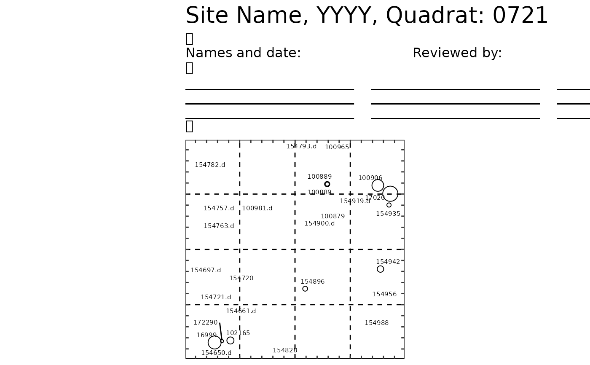
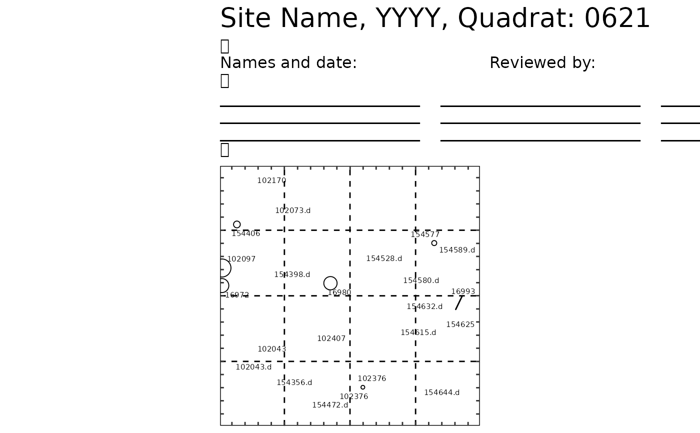
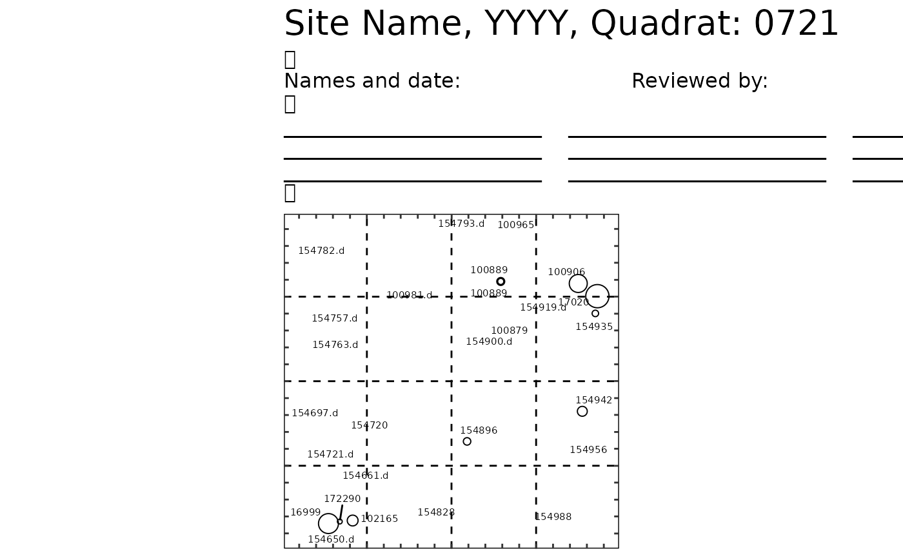
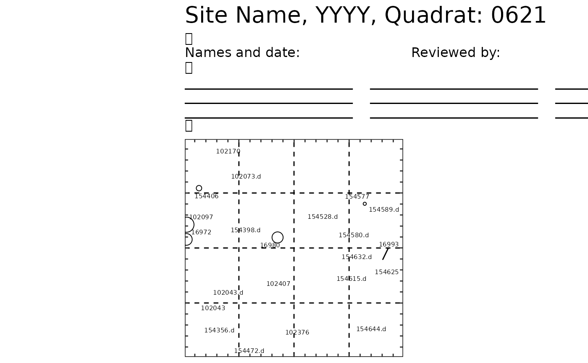
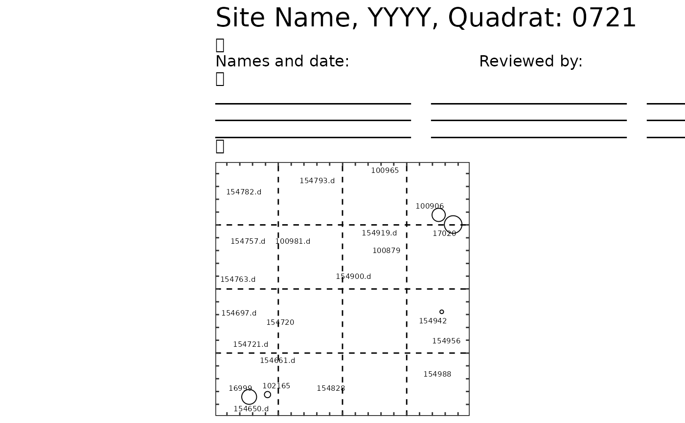
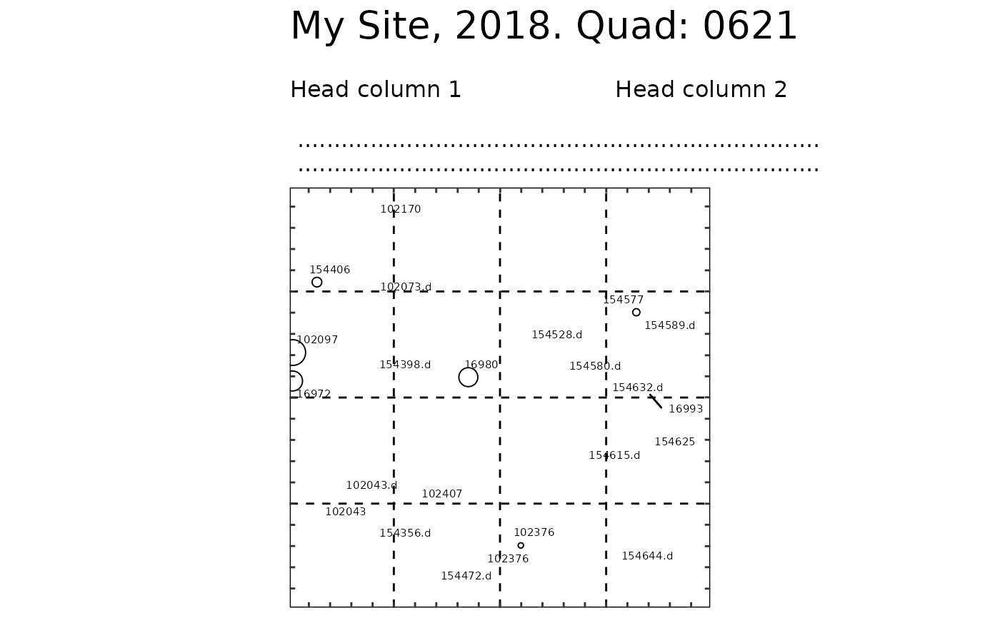
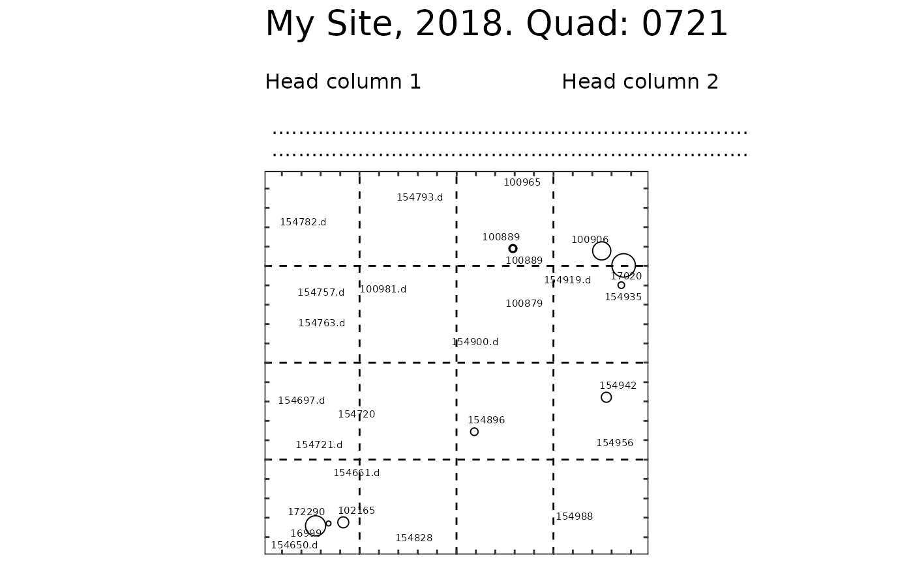

List dbh bubble-plots by quadrat (good for .pdf output).
Source:R/plot_dbh_bubles_by_quadrat.R
plot_dbh_bubbles_by_quadrat.RdList dbh bubble-plots by quadrat (good for .pdf output).
plot_dbh_bubbles_by_quadrat(vft, title_quad = "Site Name, YYYY, Quadrat:", header = header_dbh_bubbles(), theme = theme_dbh_bubbles(), lim_min = 0, lim_max = 20, subquadrat_side = 5, tag_size = 2, move_edge = 0, status_d = "dead")
Arguments
| vft | A ForestGEO ViewFullTable (dataframe). |
|---|---|
| title_quad | A string to use as a title. |
| header | A string to use as a header (see headers). |
| theme | An object of class "theme". |
| lim_min, lim_max | Minimum and maximum limits of the plot area. |
| subquadrat_side | Length in meters of the side of a subquadrat. |
| tag_size | A number giving tag size. Passed to ggrepel::geom_text_repel. |
| move_edge | A number to adjust the extension of the grid lines beyond the plot limits. |
| status_d | A character string indicating the value of the variable status that corresponds to dead stems. |
Value
A list which each element is a plot of class ggplot.
See also
Other plot functions: autoplot.fgeo_habitat,
autoplot.sp_elev,
autoplot_by_species.sp_elev,
elev,
plot_tag_status_by_subquadrat,
sp_elev, sp
Other functions to list plots from ForestGEO ViewFullTable: plot_tag_status_by_subquadrat
Other functions to plot dbh bubbles: header_dbh_bubbles,
theme_dbh_bubbles
Examples
assert_is_installed("fgeo.x") # Create a small VieFullTable first_n <- function(x, n) x %in% sort(unique(x))[1:n] small_vft <- fgeo.x::vft_4quad %>% dplyr::filter(first_n(CensusID, 1) & first_n(QuadratID, 2)) %>% dplyr::sample_n(50) plot_dbh_bubbles_by_quadrat(small_vft)#>#>#> $`621`#> Warning: Removed 12 rows containing missing values (geom_point).#> #> $`721`#> Warning: Removed 15 rows containing missing values (geom_point).#># To print all plots into a .pdf file see `?pdf()` plot_dbh_bubbles_by_quadrat(small_vft)#>#>#> $`621`#> Warning: Removed 12 rows containing missing values (geom_point).#> #> $`721`#> Warning: Removed 15 rows containing missing values (geom_point).#># Be careful if subsetting by DBH: You may unintentionally remove dead trees. # You should explicietly inlcude missing `DBH` values with `is.na(DBH)` include_missing_dbh <- subset(small_vft, DBH > 20 | is.na(DBH)) plot_dbh_bubbles_by_quadrat(include_missing_dbh)#>#>#> $`621`#> Warning: Removed 12 rows containing missing values (geom_point).#> #> $`721`#> Warning: Removed 15 rows containing missing values (geom_point).#># Customizing the maps ---------------------------------------------------- # A custom title and header myheader <- paste( " ", "Head column 1 Head column 2 ", " ", " ........................................................................", " ........................................................................", sep = "\n" ) plot_dbh_bubbles_by_quadrat( small_vft, title_quad = "My Site, 2018. Quad:", header = myheader )#>#>#> $`621`#> Warning: Removed 12 rows containing missing values (geom_point).#> #> $`721`#> Warning: Removed 15 rows containing missing values (geom_point).#># Skip R CMD check for speed # \donttest{ # Tweak the theme with ggplot library(ggplot2) plot_dbh_bubbles_by_quadrat( small_vft, title_quad = "My Site, 2018. Quad:", header = header_dbh_bubbles("spanish"), tag_size = 3, theme = theme_dbh_bubbles( axis.text = NULL, # NULL shows axis.text; element_blank() doesn't. plot.title = element_text(size = 15), plot.subtitle = element_text(size = 5), panel.background = element_rect(fill = "grey") ) )#>#>#> $`621`#> Warning: Removed 12 rows containing missing values (geom_point).#> #> $`721`#> Warning: Removed 15 rows containing missing values (geom_point).#># }